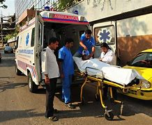

The Department of Emergency Medicine thoroughly diagnoses the patient and treats them in the emergency room. If the need arises for further analysis and testing, they are admitted to the hospital for further assessments by the medical professionals and doctors at CARE Hospitals.
The Department of Emergency Medicine at CARE Hospitals work 24*7 and is well-equipped with all the medical essentials, diagnostic and treatment tools and the conditions like trauma, burns, brain stroke and heart attack can be managed effectively.
 Inpatient care is the healthcare provided when you get admitted to a hospital. In order for inpatient expenses to be covered by health insurance, the duration of hospital stay should be more than 24 hours. Unless covered under Day-care procedures, any treatment requiring less than a 24-hour stay at the hospital isn’t paid for by health insurance.
Inpatient care is the healthcare provided when you get admitted to a hospital. In order for inpatient expenses to be covered by health insurance, the duration of hospital stay should be more than 24 hours. Unless covered under Day-care procedures, any treatment requiring less than a 24-hour stay at the hospital isn’t paid for by health insurance.Surgical services are the most spectacularly visible function of the hospital. In a general hospital, all branches of the surgical services diagnostic, therapeutic and operation theatres are combined as one department.
Again, the policies and procedures should be available in writing. A “credentials committee” the equivalent of medical audit committee of medical services, must have clear criteria regarding surgical procedures to guide it.
Diagnostic services in multispeciality hospitals are organized to provide all types of facilities with the resource of new technologies, advanced medical devices, equipment, and people get the fastest reports day by day the healthcare industry is transforming. Dr. Maid Multispeciality hospital and diagnostic center staff are well trained high-quality diagnostic care in a safe and secure environment in the area of diagnostics services by 24 hours. The benefits of multispecialty hospitals are providing all kinds of medical treatment and diagnostic services, and emergency care near you.
It includes the Diagnose clinical services of pathology Lab, CT Scan, Digital X-ray, Mammography, Stress Test (TMT), 2D Echo, Sonography. All medical experts teams physicians, nurses, technicians, technologists, administrators, as well as program assistants and report analysts near you.
Everyone should go for regular health checks, even when they feel are healthy or unhealthy. Your health should still be confirmed by a healthcare professional.
The assistance of diagnostic services in the growth of medical science is absolute. In the past time, people were not given the importance of diagnostic tests due to which, lots of people died. Now a day, there are different types of tests and medical examination checkups are available people can get immediate medical precaution.
The assistance of diagnostic services in the growth of medical science is absolute. In the past time, people were not given the importance of diagnostic tests due to which, lots of people died. Now a day, there are different types of tests and medical examination checkups are available people can get immediate medical precaution.